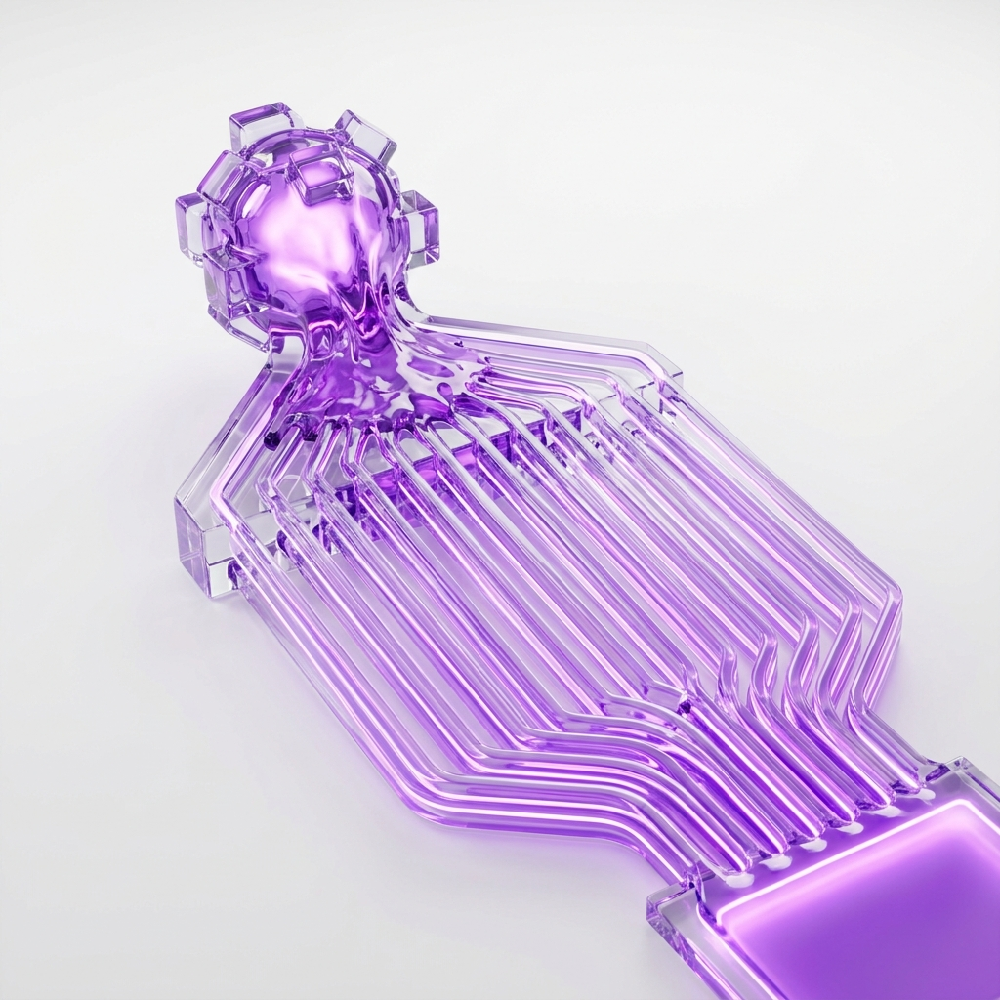

Nelle prime fasi di vita di un'azienda, l'iper-controllo del fondatore o del CEO è l'asset principale. È la dedizione totale ai dettagli che garantisce la soddisfazione dei primi grandi clienti e l'affermazione sul mercato.
Ma quando l'azienda supera i 50 dipendenti e i milioni di fatturato iniziano ad accumularsi, ciò che prima era il motore della crescita si trasforma in un pesante "collo di bottiglia". Mantenere il controllo totale non è più una garanzia di qualità, ma un freno fisico alla Delivery.
Il limite umano dell'execution
La mente di un C-Level può governare in modo efficace un numero finito di variabili quotidiane. Quando ogni dipartimento (marketing, vendite, acquisti, legale) deve attendere l'intermediazione o il parere dall'alto per procedere, i flussi di lavoro subiscono ritardi paralizzanti.
- Le firme di delibera rimangono ferme nelle caselle email per intere settimane.
- I dipendenti in prima linea si abituano a delegare verso l'alto (reverse-delegation), perdendo la capacità decisionale autonoma.
- Il middle management diventa un semplice veicolo di informazioni non elaborate tra la trincea e la direzione.
"Il CEO che risolve ogni singola crisi operativa sta segretamente distruggendo il valore di scalabilità della sua impresa. Diventa proprietario di un posto di lavoro pesantissimo, non di un'azienda strutturata."
La soluzione Sintelops: Architettare l'autonomia
Interveniamo disegnando "meccanismi di integrazione". Sostituiamo il parere umano obbligatorio del CEO con policy chiare e dashboard visibili a tutti i reparti. Decentralizziamo il processo decisionale in modo intelligente: la leadership monitora solo le eccezioni (Management by Exception) grazie a KPI centralizzati, permettendo all'azienda di procedere rapida, scalabile e autonoma.
📖 Questo articolo fa parte del nostro cluster sulla ristrutturazione operativa — la guida completa su come eliminare i colli di bottiglia e scalare senza perdere il controllo.